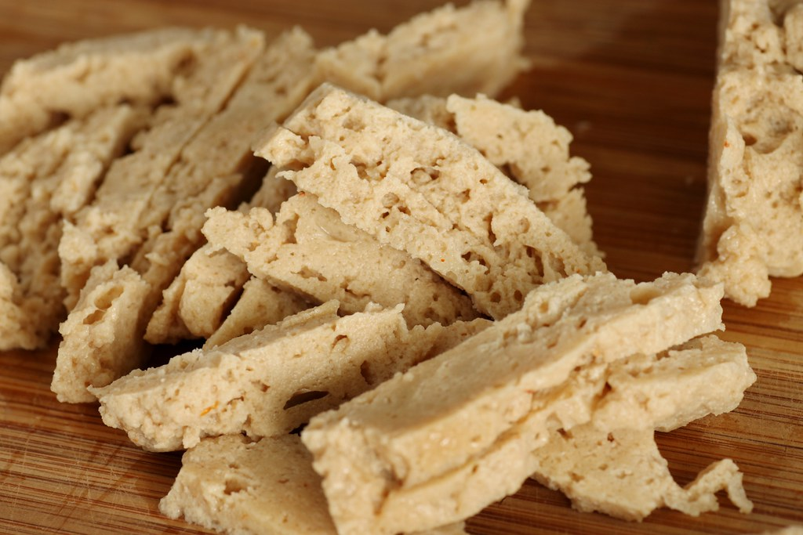

Seitan

Description
This easy seitan recipe is the best I've ever used. I make it often to use on sandwiches and in
stir-fries.
Ingredients
- 1 cup vital wheat gluten
- 4 ½ cups vegetable broth, divided
- ¼ cup liquid aminos (such as Bragg®)
- 3 tablespoons nutritional yeast
- 1 tablespoon olive oil
- 1 ½ teaspoons minced garlic
- 4 cups water
- ¼ cup tamari
Steps
- Stir wheat gluten, 1/2 cup broth, liquid aminos, nutritional yeast, oil, and garlic together
in a bowl until ingredients come together into a ball. Knead until dough has a rubbery texture.
Divide dough into 3 equal pieces and shape into 1/2-inch-thick patties.
- Combine remaining 4 cups vegetable broth, water, and tamari in a large pot; bring to a boil.
Carefully lower patties into boiling broth; cover the pot and return to a boil. Set the lid
slightly askew to vent steam and reduce the heat to low. Continue simmering, turning occasionally,
until patties are firm, about 1 hour.
- Remove from the heat and uncover the pot. Allow patties to cool in broth for 15 minutes before serving.
Home